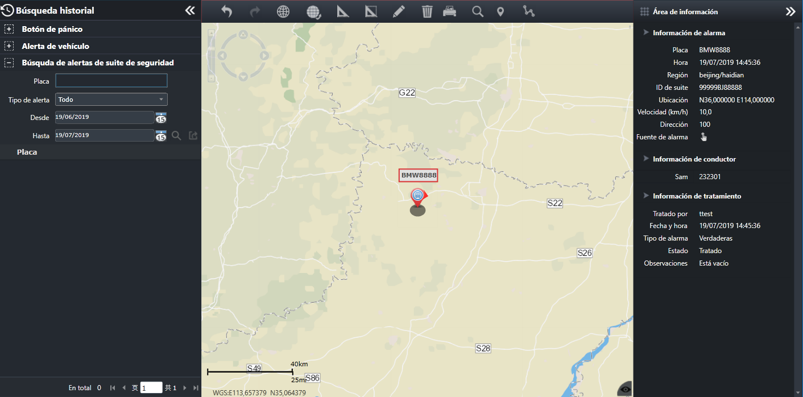

Consulte la información de la alerta de dispositivo que el sistema ha procesado para ver la información del video, las trayectorias
históricas, etc. del vehículo.
En la barra de menú de navegación izquierda, haga clic en el menú principal para entrar a la interfaz principal de la consulta de alerta histórica de dispositivo.

Fig 52 Búsqueda histórica de alertas de dispositivos